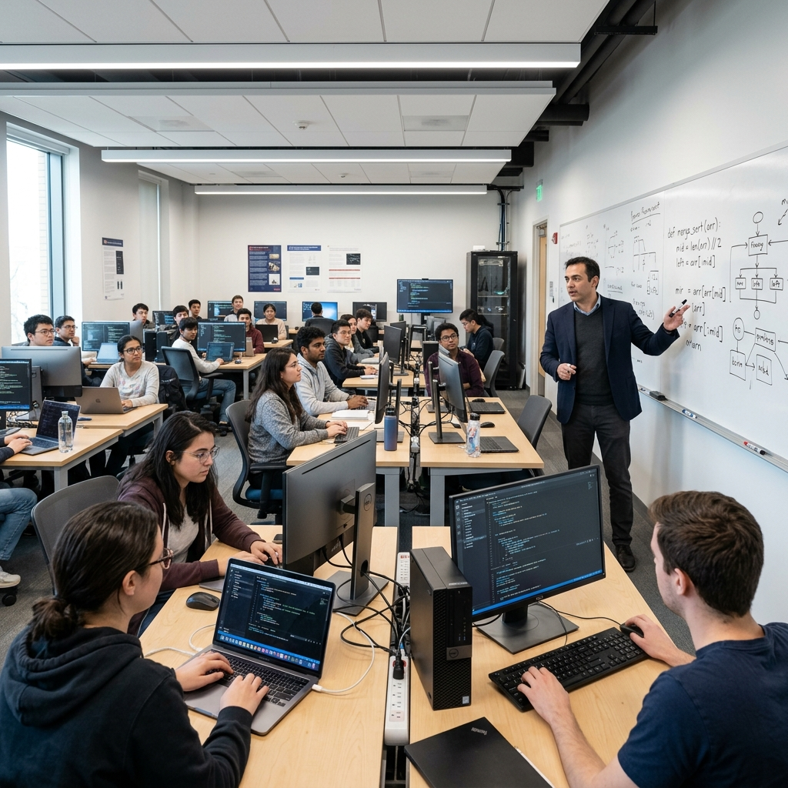

Somos el centro de capacitación líder en Lima, Perú. Te preparamos para el mundo laboral real mediante talleres interactivos 100% prácticos y carreras técnicas de alta demanda.
Graduados Exitosos
Inserción Laboral
Clases Prácticas
Talleres de última generación
Convenios con empresas en Lima
Ofrecemos dos modalidades de estudio adaptadas a tus objetivos de tiempo y metas profesionales.
Programas integrales de larga duración (2 a 3 años) diseñados para formar técnicos líderes. Título oficial y convenios de prácticas laborales.
Módulos de 2 a 6 meses diseñados para una rápida inserción laboral. Ideal para emprender tu propio negocio o actualizar habilidades.
Nos enfocamos en una formación orientada a la práctica real desde el primer día, brindando las herramientas clave para incorporarte con éxito en las industrias locales.
Cocinas de acero industrial, laboratorios informáticos modernos y salones de estética equipados.
Vinculamos a nuestros mejores estudiantes con importantes empresas y redes de servicio en Lima.
Obtén acreditaciones que fortalecen tu currículum y certifican tus competencias laborales.
Talleres en turnos mañana, tarde y noche, además de modalidades de fin de semana.

Conoce las historias de superación y éxito de nuestros estudiantes de Lima, quienes hoy lideran su propio futuro.
Estudiar Gastronomía en Copérnico cambió mi vida. Las cocinas son súper completas y los profesores te exigen nivel de restaurante real. Hoy dirijo mi propio emprendimiento de comida criolla en Miraflores.
Llevé el curso corto de Barbería y Manicure. Los talleres prácticos desde el primer mes me dieron la confianza necesaria. En solo 6 meses logré abrir mi salón de estética en Los Olivos.
La carrera de Computación e Informática me abrió las puertas al sector tecnológico. Los convenios de la bolsa laboral me ayudaron a conseguir mis primeras prácticas en San Isidro antes de egresar.
Comunícate con nuestras asesoras y asegura tu vacante en el ciclo de este mes. Ofrecemos descuentos especiales por pre-inscripción online.